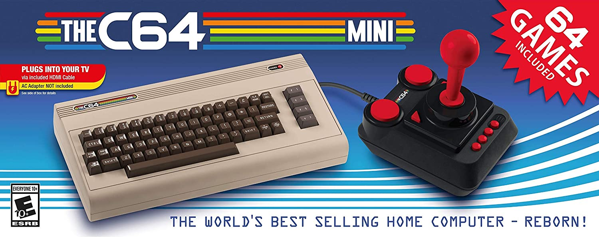
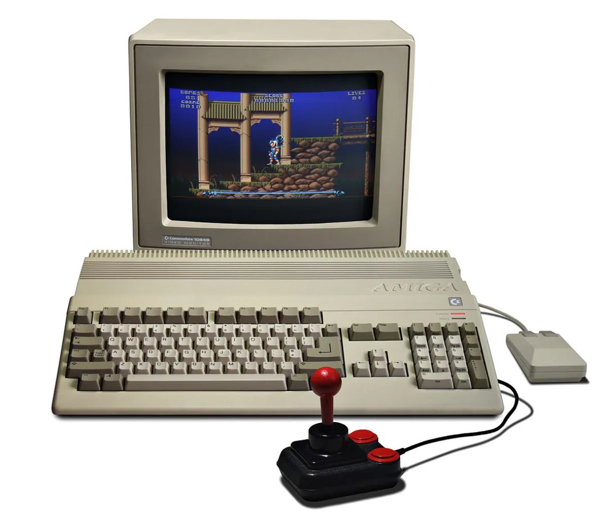
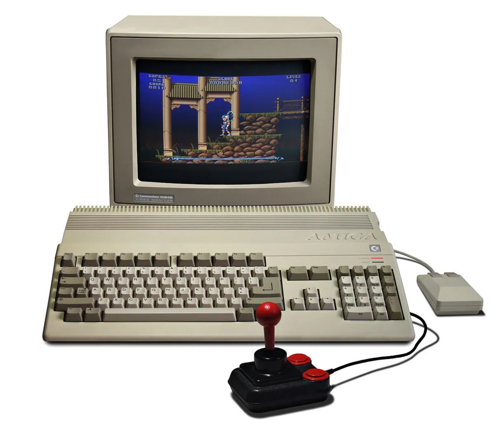

¿QUE SON?
Un videojuego es una aplicación interactiva orientada al entretenimiento que, a través de ciertos mandos o controles, permite simular experiencias en la pantalla de un televisor, una computadora u otro dispositivo electrónico.
Los videojuegos se diferencian de otras formas de entretenimiento, en que deben ser interactivos; es decir, los usuarios deben involucrarse activamente con el contenido.
El concepto de videojuego se utiliza para referirse a cualquier juego digital interactivo, independientemente de su soporte físico, pueden ser muy distintos entre sí, tanto en complejidad como en calidad gráfica y en temática.
SU HISTORIA
Durante un tiempo fue difícil precisar cuál fue el primer videojuego, principalmente por las múltiples definiciones que se han establecido, pero Naught and cross, también llamado OXO, desarrollado por Alexander S. Douglas en 1952, el juego era una versión para computadora de el juego de tres en raya que se ejecutaba en EDSAC y permitía que un jugador humano jugara contra la máquina.

En 1958 William Higginbotham creó, sirviéndose de un programa para el cálculo de trayectorias y un osciloscopio, Tennis for Two (tenis para dos): un simulador de tenis de mesa para entretenimiento de los visitantes de la exposición Brookhaven National Laboratory.

Este videojuego fue el primero en permitir el juego entre dos jugadores humanos. Cuatro años más tarde Steve Russell, un estudiante del Instituto de Tecnología de Massachussets, dedicó seis meses a crear un juego para computadora usando gráficos vectoriales: Spacewar.
En este juego, dos jugadores controlaban la dirección y la velocidad de dos naves espaciales que luchaban entre ellas. El videojuego funcionaba sobre un PDP-1 y fue el primero en tener un cierto éxito, aunque apenas fue conocido fuera del ámbito universitario.

En 1966 Ralph Baer empezó a desarrollar junto a Albert Maricon y Ted Dabney, un proyecto de videojuego llamado Fox and Hounds dando inicio al videojuego doméstico. Este proyecto evolucionaría hasta convertirse en la Magnavox Odyssey, el primer sistema doméstico de videojuegos lanzado en 1972 que se conectaba a la televisión y que permitía jugar a varios juegos pregrabados.

Un hito importante en el inicio de los videojuegos tuvo lugar en 1971 cuando Nolan Bushnell comenzó a comercializar Computer Space, una versión de Space War, aunque otra versión recreativa de Space War como fue Galaxy War puede que se le adelantara a principios de los 70 en el campus de la universidad de Standford.

La ascensión de los videojuegos llegó con la máquina recreativa Pong que es considerada la versión comercial del juego Tennis for Two de Higginbotham. El sistema fue diseñado por Al Alcom para Nolan Bushnell en la recién fundada Atari.

El juego se presentó en 1972 y fue la piedra angular del videojuego como industria. Durante los años siguientes se implantaron numerosos avances técnicos en los videojuegos (destacando los microprocesadores y los chips de memoria). Aparecieron en los salones recreativos juegos como Space Invaders (Taito) o Asteroids (Atari).
Los años 80 comenzaron con un fuerte crecimiento en el sector del videojuego alentado por la popularidad de los salones de máquinas recreativas y de las primeras videoconsolas aparecidas durante la década de los 70.
Durante estos años destacan sistemas como Oddyssey 2 (Phillips), Intellivision (Mattel), Colecovision (Coleco), Atari 5200, Commodore 64, Turbografx (NEC). Por otro lado en las máquinas recreativas triunfaron juegos como el famoso Pacman (Namco), Battle Zone (Atari), Pole Position (Namco), Tron (Midway) o Zaxxon (Sega).
CONSOLAS |
VIDEOJUEGOS |
|---|---|
 |
 |
 |
 |
 |
 |
 |
 |
|  |  |
 |
El negocio asociado a esta nueva industria alcanzó grandes cosas en estos primeros años de los 80, pero sin embargo, en 1983 comenzó la llamada crisis del videojuego, afectando principalmente a Estados Unidos y Canadá, y que no llegaría a su fin hasta 1985, Japón apostó por el mundo de las consolas con el éxito de la Famicom (llamada en occidente como Nintendo Entertainment System), lanzada por Nintendo en 1983 mientras en Europa se decantaba por los microordenadores como el Commodore 64 o el Spectrum.

A la salida de su particular crisis los norteamericanos continuaron la senda abierta por los japoneses y adoptaron la NES como principal sistema de videojuegos. A lo largo de la década fueron apareciendo nuevos sistemas domésticos como la Master System (Sega), el Amiga (Commodore) y el 7800 (Atari) con juegos hoy en día considerados clásicos como el Tetris.
 

A finales de los 80 comenzaron a aparecer las consolas de 16 bits como la Mega Drive de Sega y los microordenadores fueron lentamente sustituidos por las computadoras personales basadas en arquitecturas de IBM.

En 1985 apareció Super Mario Bros, que supuso un punto de inflexión en el desarrollo de los juegos electrónicos, ya que la mayoría de los juegos anteriores sólo contenían unas pocas pantallas que se repetían en un bucle y el objetivo simplemente era hacer una alta puntuación. El juego desarrollado por Nintendo supuso un estallido de creatividad. Por primera vez teníamos un objetivo y un final en un videojuego. En los años posteriores otras compañías emularon su estilo de juego.
En el campo de las recreativas, destacaron videojuegos como Defender, Rally-X, Dig Dug, Bubble Bobble, Gauntlet, Out Run o Shinobi además de producirse un cambio en cuanto a la nacionalidad de los juegos pasando a ser Japón la mayor productora.


Otra rama de los videojuegos que creció con fuerza fue la de los videojuegos portátiles. Estos comenzaron a principios de los 70 con los primeros juegos completamente electrónicos lanzados por Mattel, los cuales difícilmente podían considerarse como videojuegos, y fueron creciendo en popularidad gracias a conversiones de recreativas como las realizadas por Coleco o adictivos microjuegos como las Game & Watch de Nintendo. La evolución definitiva de las portátiles como plataformas de videojuego llegó en 1989 con el lanzamiento de la Game Boy (Nintendo).

A principios de los años 90 las videoconsolas dieron un importante salto técnico gracias a la competición de la llamada "generación de 16 bits" compuesta por la Mega Drive, la Super Nintendo Entertainmet de Nintendo, la PC Engine de NEC, conocida como Turbografx en occidente y la CPS Changer de (Capcom), junto a ellas también apareció la Neo Geo (SNK) una consola que igualaba las prestaciones técnicas de un arcade pero demasiado cara para llegar de forma masiva a los hogares.


Esta generación supuso un importante aumento en la cantidad de jugadores y la introducción de tecnologías como el CD-ROM, una importante evolución dentro de los diferentes géneros de videojuegos, principalmente gracias a las nuevas capacidades técnicas, mientras tanto diversas compañías habían comenzado a trabajar en videojuegos con entornos tridimensionales, principalmente en el campo de los PC, obteniendo diferentes resultados desde las "2D y media" de Doom, 3D completas de 4D Boxing a las 3D sobre entornos pre-renderizados de Alone in Dark. Referente a las ya antiguas consolas de 16 bits, su mayor y último logro se produciría por el SNES mediante la tecnología 3-D de pre-renderizados de SGI, siendo su máxima expresión juegos como Donkey Kong Country y Killer Instinct. También surgió el primero juego poligonal en consola, la competencia de la SNES, Mega-Drive, lanzó el Virtual Racing, que tuvo un gran éxito ya que marcó un antes y un después en los juegos 3D en consola.
Rápidamente los videojuegos en 3D fueron ocupando un importante lugar en el mercado, principalmente gracias a la llamada "generación de 32 bits" en las videoconsolas: Sony PlayStation y Sega Saturn (principalmente en Japón); y la "generación de 64 bits" en las videoconsolas: Nintendo 64 y Atari jaguar. En cuanto a los ordenadores, se crearon las aceleradoras 3D.
La consola de Sony apareció tras un proyecto iniciado con Nintendo (denominado SNES PlayStation), que consistía en un periférico para SNES con lector de CD. Al final Nintendo rechazó la propuesta de Sony, puesto que Sega había desarrollado algo parecido sin tener éxito, y Sony lanzó independientemente PlayStation. Por su parte los arcades comenzaron un lento pero imparable declive según aumentaba el acceso a consolas y ordenadores más potentes.
Por su parte los videojuegos portátiles, producto de las nuevas tecnologías más poderosas, comenzaron su verdadero auge, uniéndose a la Game Boy máquinas como la Game Gear (Sega), Linx (Atari) o la Neo Geo Pocket (SNK), aunque ninguna pudo hacerle frente a la popularidad de la Game Boy, siendo esta y sus descendientes (Game Boy Pocket, Game Boy Color, Game Boy Advance, Game Boy Advance SP) las dominadoras del mercado.
Hacia finales de la década la consola más popular era la PlayStation con juegos como Final Fantasy VII (Square), Resident Evil (Capcom), Winning Eleven 4 (Konami), Gran Turismo (Polyphony Digital) y Metal Gear Solid (konami).


En PC eran muy populares los FPS (juegos de acción en primera persona) como Quake (id Softare), Unreal (Epic Megagames) o Half-Life (Valve), y los RTS (juegos de estrategia en tiempo real) como Command & Conquer (Westwood) o Starcraft (Blizzard). Además, conexiones entre ordenadores mediante internet facilitaron el juego multijugador, convirtiéndolo en la opción predilecta de muchos jugadores, y fueron las responsables del nacimiento de los MMORPG (juegos de rol multijugador online) como Ultima Online (Origin). Finalmente en 1998 apareció en Japón la Dreamcast (Sega) y daría comienzo a la "generación de los 128 bits".
En el 2000 Sony lanzó la anticipada PlayStation 2 y Sega lanzó otra consola con las mismas características técnicas de la Dreamcast, nada más que venia con un monitor de 14 pulgadas, un teclado, altavoces y los mismos mandos llamados Dreamcast Drivers 2000 Series CX-1, Microsoft entra en la industria de las consolas creando la Xbox en 2001.
Nintendo lanzó el sucesor de la Nintendo 64, la Gamecube, y la primera Game Boy completamente nueva desde la creación de la compañía, la Game Boy Advance. Sega viendo que no podría competir, especialmente con una nueva máquina como la de Sony, anunció que ya no produciría hardware, convirtiéndose sólo en desarrolladora de software en 2002.
El ordenador personal PC es la plataforma más cara de juegos pero también la que permite mayor flexibilidad. Esta flexibilidad proviene del hecho de poder añadir al ordenador componentes que se pueden mejorar constantemente, como son tarjetas gráficas o de sonido y accesorios como volantes, pedales y mandos, etc. Además es posible actualizar los juegos con parches oficiales o con nuevos añadidos realizados por la compañía que creó el juego o por otros usuarios, las tiendas de videojuegos más importantes para el PC GAMING en la actualidad son STEAM y EPIC GAMES, ya que son las que más usuarios activos tienen por día y a su vez las tiendas virtuales con mayor variedad de videojuegos, ya que puedes encontrar títulos exclusivos de PLAY STATION, XBOX y NINTENDO sin olvidar los juegos exclusivos de PC.


Hironobu Sakaguchi

Es un diseñador y desarrollador de videojuegos. Es el creador de la saga de videojuegos Final Fantasy desde el primer juego de la serie en 1987. En 1991 fue nombrado vicepresidente ejecutivo de Square. En 2004 creó el estudio Mistwalker y abandonó Square.
Nacimiento: 25 de noviembre de 1962
Fue director y productor de Final Fantasy, Final Fantasy II, Final Fantasy III, Final Fantasy IV, Final Fantasy V, y Final Fantasy IX. También produjo Final Fantasy VI, Final Fantasy VII, y Final Fantasy VIII.
Shigeru Miyamoto

Es un diseñador y productor de videojuegos japonés que trabaja para Nintendo desde 1977.
Nacimiento: 16 de noviembre de 1952
Participo en el desarrollo de juegos como Devil World, Donkey Kong 3, Ice Climber, Super Mario Bros entr muchos otros.

Suda51

Goichi Suda, es el director ejecutivo de Grasshopper Manufacture. El número "51" en su apodo, Suda51, es un juego de palabras con las letras de su nombre. En Japonés, "Go" significa 5 y "ichi", 1.
Nacimiento: 2 de enero de 1968
Participo en el desaroolo de juegos actuales tales como Killer is Dead, Travis Strikes Again: No More Heroes, No More Heroes 3 entre otros.

John Romero

Es un diseñador de videojuegos cuya importancia es fundamental en la historia de esta industria, especialmente en el género de los videojuegos de disparos en primera persona.
Nacimiento: 28 de octubre de 1967
Estuvo involucrado en el desarrollo de varios juegos punteros, entre los que se cuentan Commander Keen, Wolfenstein 3D, Doom, Doom II: Hell on Earth y Quake. Fue productor ejecutivo y diseñador del juego en Heretic y Hexen.

Keiji Inafune
:quality(70)/cloudfront-us-east-1.images.arcpublishing.com/metroworldnews/LO5JOHRVAVBYBHAWFYICTL2FCM.jpg)
Era la cabeza del equipo de investigación, desarrollo y negocio en red de Capcom, es más conocido por ser uno de los diseñadores de Megaman y productor de Onimusha y la saga de Dead Rising. En varios de los créditos de sus juegos, él usa el nombre de "INAFKING".
Nacimiento: 8 de mayo de 1965
Participo en el desarrollo de Resident Evil: Director's Cut, Resident Evil 2, Resident Evil, Resident Evil 5, Onimusha: Warlords, Onimusha 2: Samurai's Destiny, Onimusha Blade Warriors, Onimusha 3: Demon Siege.

Conoce más desarrolladores de videojuegos aquí (página de terceros)
En la actualidad los videojuegos forman una parte importante en el día a día de las personas, ya que no solo se pueden usar para entretenerse, sino que también pueden ser utilizados como método de relajación, ya que hay juegos tales como MINECRAFT que ayudan a desestresarse por su tranquila música o sus mecánicas simples de aprender, en la actualidad hay 3 compañías principales de consolas las cuales son Microsoft con la XBOX, Sony con la PLAY STATION y Nintendo con la consola más antigua de las 3 con la NINTENDO SWITCH

Con el salto de la tecnología actualmente los celulares también han tomado un poco de relevancia en cuanto al mundo del GAMING se refiere, ya que puedes jugar videojuegos tales como MINECRAFT, ROBLOX y diversos juegos e inclusive con programas externos emular juegos de consolas antiguas como la GAME BOY, la PLAY STATION 2 y el primer XBOX aunque esto se ve limitado a las capacidades de los teléfonos por lo cual muchas de las veces los juegos tienen una calidad mucho menor a las consolas y PC o inclusive pueden llegar a dañar y sobrecalentar el dispositivo.
Esta "guerra" no es algo nuevo que haya surgido hace 1 o 2 años, si bien hace 1 año es cuando más dio de que hablar esta competencia surgió prácticamente desde que aparecieron las primeras árcades y consolas, ya que desde ese entonces peleaban por ver quien tenía mayor presencia y por tanto mayores ventas.
Al hablar de una guerra de consolas no se refiere a una guerra física en la cual hay soldaos combatiendo, sino más bien a una guerra por ver quien tiene el mayor control sobre el mercado del gaming, no solo en cuanto a videojuegos se refiere sino también en las ventas de consolas y de suscripciones, para comprender un poco mejor el tema te dejo un video donde se explica todo sobre esta "guerra"
Si estás interesado en este tema y quieres saber más puedes dar click aquí para ver una lista de videos en donde se explica todo desde los inicios de esta "guerra".
Dejando a un lado esta competencia te muestro los videojuegos más populares (más jugados) en la actualidad
- ° Call of Duty: Warzone
- Call of Duty: Warzone fue y es un videojuego de disparos en primera persona, perteneciente al género Battle royale gratuito, lanzado el 10 de marzo de 2020 para PlayStation 4, PlayStation 5, Xbox One, Xbox Series X|S y Microsoft Windows.
- ° Minecraft
- Minecraft es un videojuego de construcción de tipo «mundo abierto» o sandbox creado originalmente por el sueco Markus Persson, ? y posteriormente desarrollado por Mojang Studios.
- ° Outriders
- Outriders es un videojuego de rol en tercera persona de acción cooperativa solo en línea desarrollado por People Can Fly y publicado por Square Enix. Se lanzó el 1 de abril de 2021 para PlayStation 4, PlayStation 5, Stadia, Windows, Xbox One y Xbox Series X/S.
- ° Fortnite
- Fortnite es un videojuego del año 2017 desarrollado por la empresa Epic Games lanzado como diferentes paquetes de software que presentan diferentes modos de juego, pero que comparten el mismo motor de juego y mecánicas. Fue anunciado en los premios Spike Video Game Awards en 2011.
- ° Apex Legends
- Apex Legends es un videojuego gratuito perteneciente a los géneros battle royale y hero shooter en primera persona, desarrollado por Respawn Entertainment y publicado por Electronic Arts. Fue lanzado para Microsoft Windows, PlayStation 4 y Xbox One el 4 de febrero de 2019.
- ° Assassin's Creed: Valhalla
- Assassin's Creed Valhalla es un videojuego desarrollado por Ubisoft Montreal y publicado por Ubisoft. Es el decimosegundo en importancia y el vigesimosegundo lanzado dentro de la saga de Assassin Creed, y sucesor al juego del 2018 Assassin's Creed Odyssey.

- ° Counter-Strike: Global Offensive
- Counter-Strike: Global Offensive es un videojuego de disparos en primera persona desarrollado por Valve Corporation y Hidden Path Entertainment. Es el cuarto juego de la saga Counter-Strike. Fue lanzado al mercado en agosto de 2012 para las plataformas de Microsoft Windows, macOS y Xbox 360 y PlayStation 3.


Aún no sabes si es mejor invertir en una consola de nueva generación una PC GAMER de gama media, pues hoy te voy a ayudar a resolver esa duda, las consolas por una parte son muy buenas para los videojuegos, ya que están diseñadas para eso, pero también con el paso del tiempo van quedando obsoletas como la XBOX 360 y la PLAY STATION 3 que fueron las consolas más revolucionarias para la época que salieron, pero que actualmente ya no reciben soporte oficial por parte de las empresas que las hicieron, en cambio una ventaja del PC es que a pesar de que pase el tiempo sigue funcionando de manera aceptable, y si eres de las personas que les gusta la mejor experiencia de juego siempre está la opción de cambiar los componentes del PC y muchas de las veces sale más barato que comprar una consola nueva, si deseas saber más sobre las PC pulsa aquí.
De igual forma te dejo un video que compara las PC con las diferentes consolas del mercado.